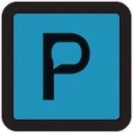

Project Details
Ping Application Elevator Pitch
Did you know that the last few years we saw a turnover rate of around 42% across several industries? What could be done about this? Well, many medium-size companies are trying to do two things: build company culture and encourage good communication. They might be using platforms like Slack, but something is not working. Employees in the company do not feel like they can communicate openly, do not feel valued, and do not feel a clear sense of how they fit into the bigger picture. That is where we can help. We are a team of five college undergraduates with degrees in the area of Computer Science and Engineering and a passion for leveraging software to help make life easier. We aim to create a platform that tackles these issues of how to create company culture, retain employees, and rethink communication. To do this in both an online and in-person environment, we need to be more than just a chat app. We will aggregate your existing communication platforms into one place. We will analyze how employees communicate individually and offer suggestions on how to remain professional in their interactions. We will consider the urgency of each message and advise when it is best to send them, reducing the noise and allowing people to work continuously without distraction. We will allow for channels of anonymous, and safely encrypted, communication. We will encourage team-building and peer-to-peer interactions with polls, surveys, wellbeing resources, and information boards that are all open to feedback. In other words, we are here to do the heavy lifting and address problems at the source, so companies do not have to.
View Pitch DeckPing Application (Technical)
Ping is an iOS application built with the idea of promoting positive company culture. Using Swift 5.0 and SwiftUI, multiple screens are created with various VStacks, HStacks, and ZStacks. Each screen provides an intuitive user interface inspired by Apple's own simplistic design.
Ping Home Screen and Integration
 Ping is an iOS application built with the idea of promoting positive company culture. Using Swift 5.0 and SwiftUI, multiple screens are created with various VStacks, HStacks, and ZStacks. Each screen provides an intuitive user interface inspired by
Apple's own simplistic design. As seen in the screenshot, common company messaging applications can be intergrated along with "Ping". For instance, by clicking on Slack, Slack's window is brought up can can be used in conjunction. Effectively, this means that companies using "Ping" do not have to give up their current platforms and waste time and resources
to transfer over to a completely new platform.
Ping is an iOS application built with the idea of promoting positive company culture. Using Swift 5.0 and SwiftUI, multiple screens are created with various VStacks, HStacks, and ZStacks. Each screen provides an intuitive user interface inspired by
Apple's own simplistic design. As seen in the screenshot, common company messaging applications can be intergrated along with "Ping". For instance, by clicking on Slack, Slack's window is brought up can can be used in conjunction. Effectively, this means that companies using "Ping" do not have to give up their current platforms and waste time and resources
to transfer over to a completely new platform.
Pin Board
 The Pin Board screen offers a way to anonymously post to a group forum. This is useful to obtain either team based or company wide news about ongoing events.
Additionally, this page also allows employees to set up meetings with a meet date and time with a pop-up calendar.
The Pin Board screen offers a way to anonymously post to a group forum. This is useful to obtain either team based or company wide news about ongoing events.
Additionally, this page also allows employees to set up meetings with a meet date and time with a pop-up calendar.
Activities List
The Activities List is the heart of promoting a more positive company culture. A curated list of popular office icebreakers and team building games are shown. Each activity can be clicked on for a short description of what the activity entails, complete with a "Watch Now" button redirecting the user to a YouTube video of the corresponding activity. The idea here is to minimize the friction out of creating a productively fun break for employees.
Settings Page
Ping aims to be as flexible of an application as possible. In the Settings Page, there are many controls varying the modularity of the application. Certain features can be enabled or disabled based on company needs and priorities. Additionally a rating system and the terms of service are provided for full transparency.
Additional Links
GitHub LinkElevator Pitch Source